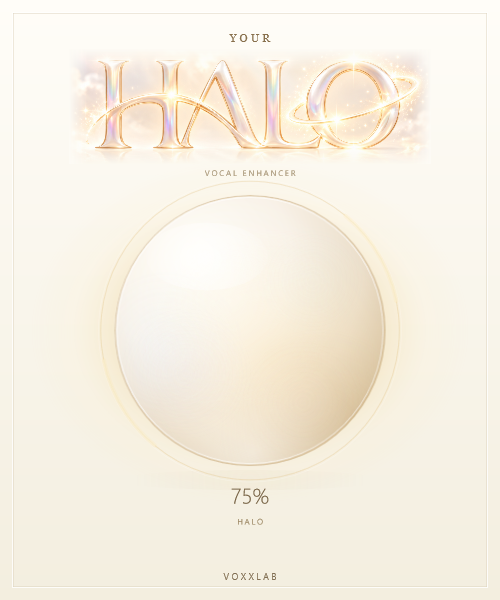

<!doctype html>
<html lang="en">
<meta charset="utf-8">
<meta name="viewport" content="width=device-width,initial-scale=1">
<title>YOUR HALO · Orb development preview</title>
<style>
*{box-sizing:border-box}body{margin:0;background:#f4efe5;color:#715c3d;font-family:Segoe UI,Arial,sans-serif}
main{max-width:940px;margin:36px auto;padding:24px;display:flex;gap:42px;align-items:center}
.capture{width:500px;max-width:100%;box-shadow:0 20px 65px #89704b20;border-radius:2px}
aside{flex:1;min-width:220px}h1{font-family:Georgia,serif;font-size:29px;font-weight:400;margin:0 0 12px}
p{font-size:14px;line-height:1.6;color:#96815f}label{display:block;margin-top:22px;font-size:12px;letter-spacing:.08em}
select,button{width:100%;padding:12px 14px;margin-top:8px;border:1px solid #d7c6a8;background:#fffaf1;color:#715c3d;border-radius:6px;font:inherit}
button{cursor:pointer;background:#f6e8ca}button:hover{background:#f1dfb6}small{display:block;margin-top:20px;line-height:1.6;color:#9b8868}
@media(max-width:800px){main{flex-direction:column;margin:12px auto;gap:24px}aside{max-width:500px;width:100%}}
</style>
<main>

<aside>
<h1>Give your voice its glow.</h1>
<p>Visual-development captures from the actual JUCE interface, using the official HALO artwork.</p>
<label for="halo">HALO SETTING</label>
<select id="halo"><option>0</option><option>25</option><option>50</option><option selected>75</option><option>100</option></select>
<label for="audio">INPUT ACTIVITY</label>
<select id="audio"><option value="0">Silence</option><option value="1">Quiet audio</option><option value="2" selected>Normal vocal level</option><option value="3">Strong vocal level</option></select>
<button id="play">Play captured breathing animation</button>
<p id="status" aria-live="polite">HALO 75% · Normal vocal level</p>
<small>Animation: 90% HALO, idle → vocal → idle, captured at 30 FPS. Synthetic vocal input drives the processor's real meter. This preview is silent; use the VST3 to hear and adjust the effect.</small>
</aside>
</main>
<script>
const capture=document.querySelector('#capture'),halo=document.querySelector('#halo'),audio=document.querySelector('#audio'),play=document.querySelector('#play'),status=document.querySelector('#status');
let running=false,start=0,last=-1;
function still(){capture.src=`Orb-HALO-${halo.value}-${audio.value}.png`;status.textContent=`HALO ${halo.value}% · ${audio.options[audio.selectedIndex].text}`}
halo.addEventListener('change',still);audio.addEventListener('change',still);
function frame(now){if(!running)return;const n=Math.floor((now-start)*30/1000)%120;if(n!==last){capture.src=`AnimationFrames/frame-${String(n).padStart(3,'0')}.png`;last=n;status.textContent=`HALO 90% · ${n>=15&&n<75?'Vocal phrase':'Idle / release'}`}requestAnimationFrame(frame)}
play.addEventListener('click',()=>{running=!running;halo.disabled=audio.disabled=running;play.textContent=running?'Stop animation':'Play captured breathing animation';if(running){start=performance.now();last=-1;requestAnimationFrame(frame)}else still()});
</script>
</html>
